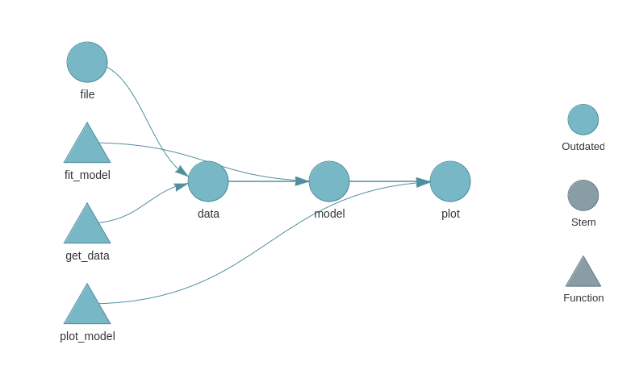
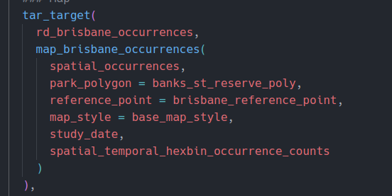
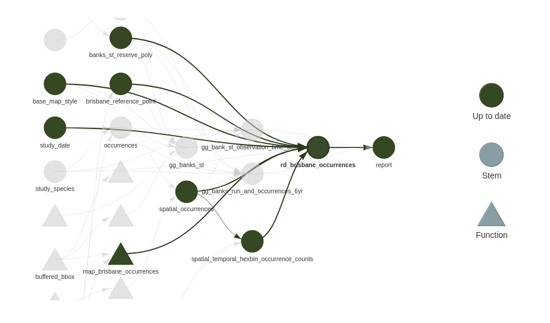

operate_on_a_b <- function(input_a = 1, input_b = 1, operation = `+`) {
operation(input_a, input_b)
}
# Predict the output
operate_on_a_b(2, 2)
operate_on_a_b(2, 2, c)
operate_on_a_b(2, 2, rnorm)
operate_on_a_b(2, 2, operate_on_a_b)
operate_on_a_b(2, 2, function(x, y) { paste0(x, y) |> as.numeric() })
operate_on_a_b(2, 2, \(x, y) union(x, y))Pure Functions as units of work
Functions are fun!
- And R really shoves them in your face e.g.
lapply, e.g.labels =in{gglpot2}- Can be intimidating at first.
- Functions underpin {targets}
- Take home point: USE MORE FUNCTIONS.
- Even if you don’t use {targets} your workflows can probably benefit from using more functions
- Take home point: USE MORE FUNCTIONS.
- Question: What is the level of comfort with writing a function?
- How often do you do it? Daily, weekly, monthly?
- Question: How do we recognise a good time to create a function?
When to create and use a function
- The classic doga is: “When you’ve copy-pasted the same code three times”. Connected to the DRY approach “Don’t Repeat Yourself”.
- When you need to make a passage of code less complex. Functions allow us to create new forms of expression that can express solutions in terms that better match our domain. Write more ‘elegant’, readable, and maintainble code.
Functions for the win*
- *win = more maintainable, more easilty debuggable code
- Question: Think about the worst code you’ve ever had to debug. What were its features? What made debugging it hard?
Debug-resistant code
- Large amount of environment ‘state’ that is time consuming to set up to recreate bug
- Large number of lines of code where bug can hide
- Stepping through it all is time consuming
- Large number of objects or functions involved
- Understanding them all is a high cognitive load
- Is anyone familiar with how bushfires are fought?
- Firefighters create fire breaks (containment lines) to break up fuel (the bushland) into containment zones. The idea is to keep the fire burning within a contained zone until it consumes all the fuel and burns itself out, or weather conditions become less favourable.
- Functions can be ‘containment zones’ for bugs.
- State to recreate bug is limited function’s inputs
- Places where bug can hide is limited to within function’s code (sometimes)
- Could actually be somewhere else, but you’ve narrowed it down
- Functions are communication tools.
- Naming a procedure after what it does can be as effective as a comment
- They provide a navigable hyperlinked structure
- Example: “classic_r_project_/R/compute_h3_indices_at_resolutions.R”
Pure functions and the target graph
- A ‘Pure’ function is a specific flavour of function that is important in the context of {targets}.
- For pure functions these two properties hold:
- Given the same arguments the function will always return the same output (‘Deterministic’).
- By extension this means the function cannot depend or be affected by on anything that is not an argument.
- Functions have ‘no side effects’ that is they cannot affect state outside the function scope in any way, other than with the output they return. No writing files, no submitting data to APIs, no setting options or environment variables etc.
- Given the same arguments the function will always return the same output (‘Deterministic’).
There’s a bunch of cool algebra that arises from pure functions you may have heard referred to called the Lambda Calculus. It shows you can calculate anything calculable in a system comprised of ONLY pure functions.
Question: How do these properties relate to reproducibility?
For our {targets} use case 2. is more important than 1. We can use non-deterministic functions with {targets}, and in fact sometimes it’s hard to get around this because so much data work involves sampling random numbers. - You’re encouraged to set a ‘seed’ to make random functions deterministic and reproducible. They now act pure within your context.
Property 2. facilitates ‘static code analysis’. That’s the process by which {targets} to turns your pipeline into a graph. Formally, a Directed Acyclyic Graph (DAG):

This is a simple example from the {targets} manual. Here’s some code from a more realistic targets plan:

And here is the corresponding section of the {targets} graph:

{targets} builds graphs like this by analysising your code. It assumes that each target depends only on its inputs, and returns a single output. Although that output can be a collection of things that is iterated over. More on that later.
By connecting target nodes via their input and output edges {targets} can determine some interesting things using this graph:
- For a given change in data / or code, the set of all downstream targets that depend on that data / code. When the pipeline is re-run only the targets that depend on things changed are built.
- The results are guaranteed to be as if the entire pipeline had been re-rerun from start to finish.
- It can determine nodes graph that do not share common dependencies. These targets can be computed in parallel to speed up the overall plan execution.
Refactoring the classic workflow to pure functions
The first step in refactoring our classic workflow into {targets} is to refactor run.R into a series of function calls to pure functions. We’ll then convert this into a {targets} ‘plan’.
- There’s actually surprisingly little work to get a {targets} pipeline running!
- Initially our functions will be too big and do too much.
- Most of the work will be refactoring to make better use of {targets} features.
But how do design functions?
- How to size a function as a unit of work for a {targets} plan?
- Code size: Not that much more than a screenful of code
- Complexity: It’s like a paragraph or a subheading. One Main idea.
- Ideally one kind of output
- A list of things of the same class is quite normal.
- Multiple distinct results is possible e.g. with a list.
- Potentially a code smell that your function is doing too much.
- Sometimes a result can be opportunistically efficiently calculated as part of something else… fair enough.
Let’s do this
Follow my lead and we’ll do our first refactor in preparation for {targets} to our project.
Refactoring Steps
- Move config and library calls into run.R
- All the subsequently created functions are going to be called and wired together in run.R
- Wrap up 01_ into a function that fetches data
- Wrap up 02_ into a funciton that wrangles data
- Split up 03_ into a function for each plot
- Split up 04_ into:
- function the creates the training data
- function that creates test train splits
- function that does the model parameter grid search
- function that fits final model
- function that creates validation data from final model and test set
- Split 05_ into one function for each plot
- Swap out all the images used in the Rmd for plot objects.
- These are already in the global envirnonment and so can be seen by knitr / rmarkdown during render.
The completed refactor is on the refactor1 branch of our project
In particular pay attention to run.R. - Notice how it is far easier to get a handle on what information our project depends on and where that is used?
Workflow tips
{fnmate}for creating a function defintion from an example call.- ‘Jump to definition’ for jumping to the body of a function from a call site.